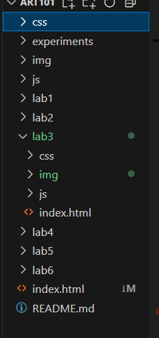
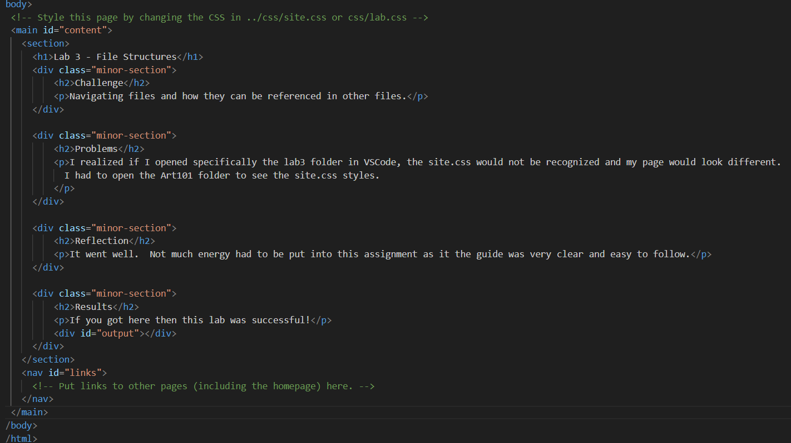
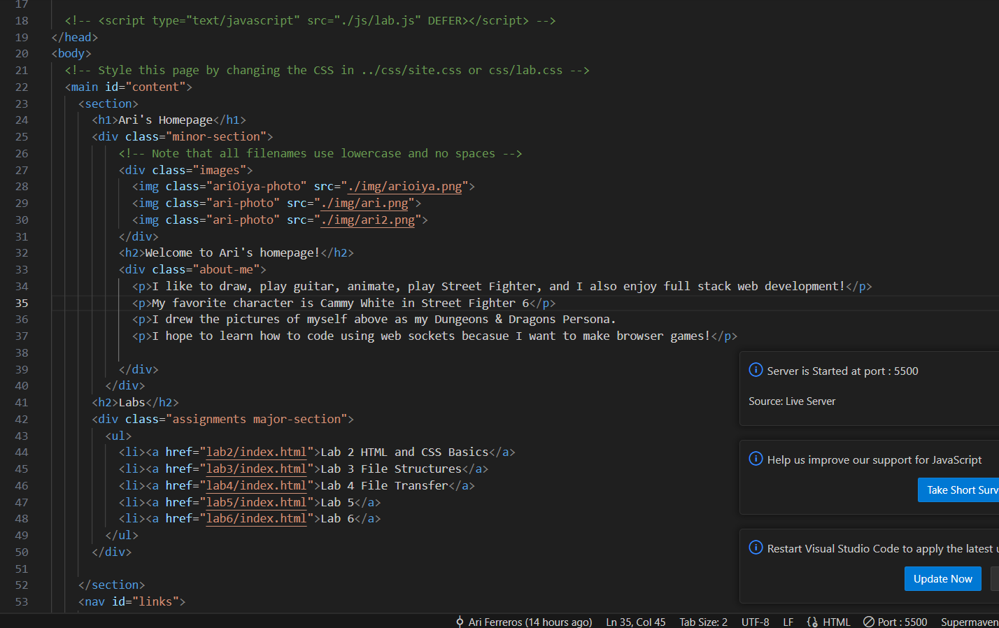
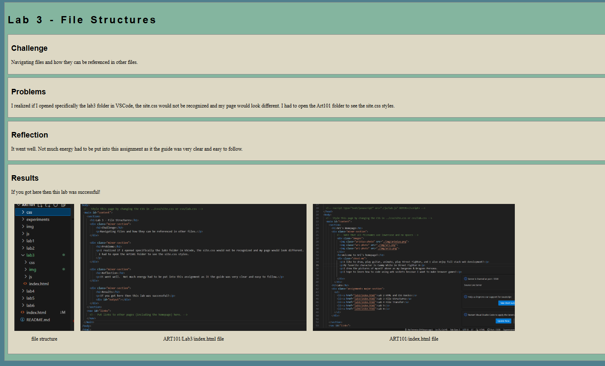

Lab 3 - File Structures
Challenge
Navigating files and how they can be referenced in other files.
Problems
I realized if I opened specifically the lab3 folder in VSCode, the site.css would not be recognized and my page would look different. I had to open the Art101 folder to see the site.css styles.
Reflection
It went well. Not much energy had to be put into this assignment as it the guide was very clear and easy to follow.
Results
If you got here then this lab was successful!

file structure

ART101/Lab3/index.html file

ART101/index.html file

ART101/Lab3/index.html file as it appears in the browser